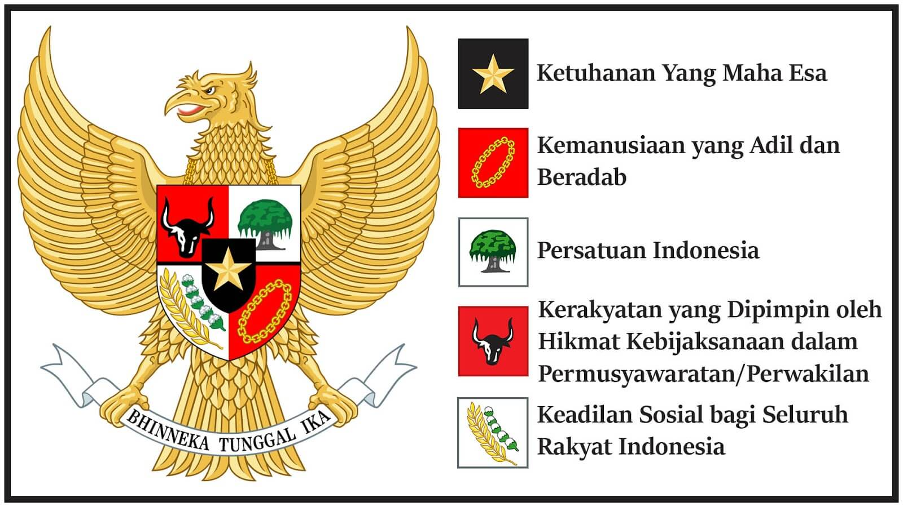

Makna Lambang Garuda Pancasila
- 
Makna dasar sila - sila pancasila
1. Ketuhanan Yang Maha Esa
Mengakui dan menghormati adanya Tuhan, menjunjung tinggi kebebasan beragama, serta hidup rukun antar umat beragama.
2. Kemanusiaan yang Adil dan Beradab
Menghargai hak asasi manusia, memperlakukan semua orang dengan adil dan penuh rasa kemanusiaan.
3. Persatuan Indonesia
Menjaga kesatuan dan keutuhan bangsa serta menempatkan kepentingan bangsa di atas kepentingan pribadi atau golongan.
4. Kerakyatan yang Dipimpin oleh Hikmat Kebijaksanaan dalam Permusyawaratan/Perwakilan
Mengutamakan musyawarah dalam pengambilan keputusan dan menjunjung demokrasi melalui sistem perwakilan.
5. Keadilan Sosial bagi Seluruh Rakyat Indonesia
Mewujudkan kesejahteraan, pemerataan, dan keadilan dalam seluruh aspek kehidupan bagi seluruh rakyat Indonesia.